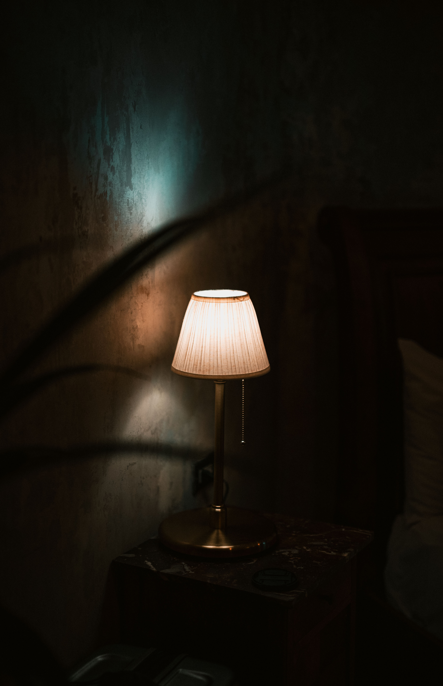
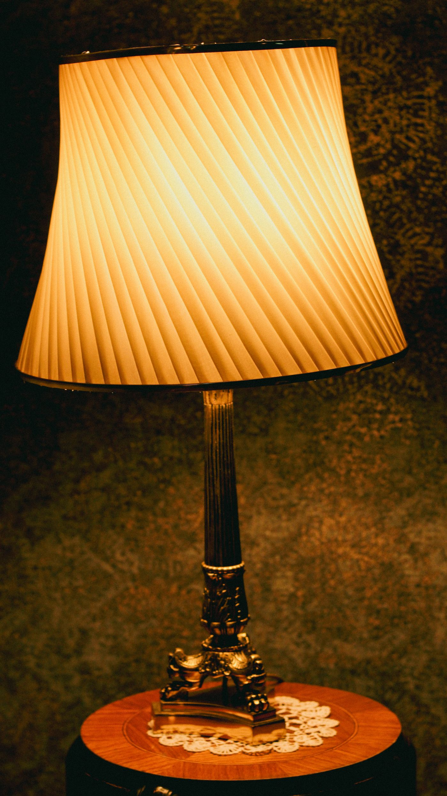

Het mooiste
uur thuis.
In de Avond-edit krijgt iedere hoek haar eigen licht. Een lamp naast je stoel, een kleine gloed op tafel en de rest van de kamer mag wat stiller worden.

Kijk naar het licht. Niet alleen naar de lamp.
Een kap tekent mee aan de sfeer. Kijk hoe het licht valt op een muur, een tafel of het boek dat naast je ligt.